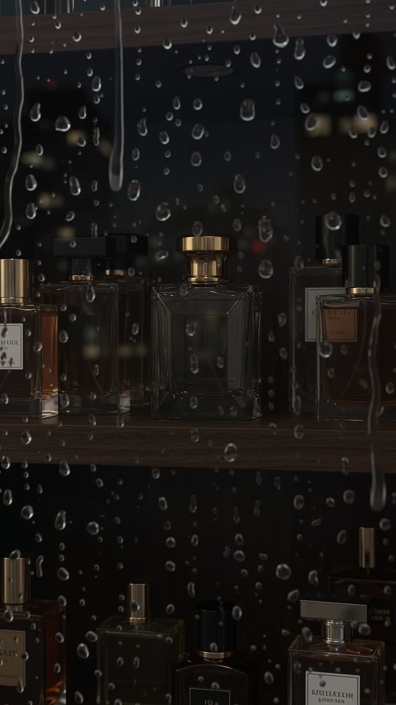
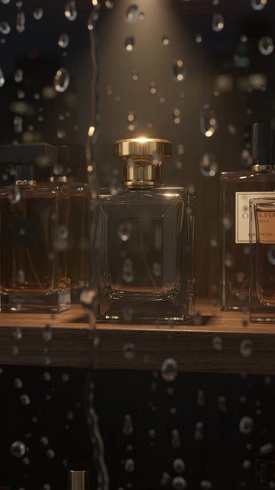
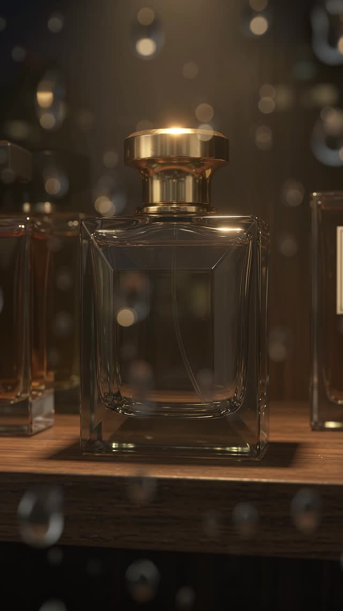
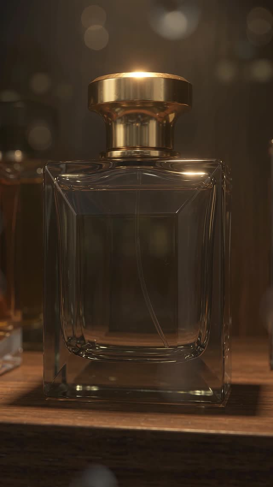

Interaction study · Front end · AI imagery
Spotlight Shelf
Study
A practice build to learn how premium product sites create atmosphere. A dark shelf of perfume bottles: hover one and a spotlight finds it, click and the camera glides in to a product card.


01 · How it works
Two images, one light
- The shelf is two matching images, one dark and one lit. A shaped clip-path mask reveals the lit version only inside a cone over the hovered bottle, so the light looks real without a 3D engine.
- Clicking scales the whole stage 3.2× towards that bottle over 650 ms, then fades in a glass product card with size options.
- Three of the bottles crossfade to a dedicated close-up image at the end of the zoom for extra detail.


02 · What I learned
Atmosphere comes from timing and light, not from heavy 3D. Easing curves, a short delay before the card appears and a slow 1.4 s camera move did more for the premium feel than any extra effect.
This is a study, not a client project. The concept is credited to Ascenta Studio's PLUIE; all bottle images are AI-generated by me. The demo loads its images from the web, so it needs an internet connection.